Rich 是一个 Python 库，用于在终端中提供富文本格式和精美的格式。
Rich 是一个非常强大的 Python 库，不仅在终端中提供丰富的文本和漂亮的格式，还可以显示表情符号、表格、进度条、标记，甚至语法突出显示的代码。
Rich 是一个 Python 库，可以为您在终端中提供富文本和精美格式。Rich API 可以很容易的在终端输出添加各种颜色和不同风格。Rich 还可以绘制漂亮的表格，进度条，markdown，突出显示语法的源代码及回溯等等，不胜枚举。
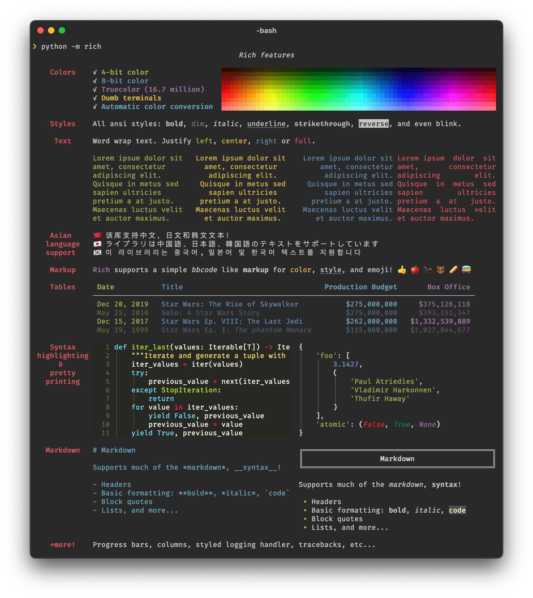
1. 兼容性
Rich 适用于 Linux，OSX 和 Windows。真彩色/表情符号可与新的 Windows 终端一起使用，Windows 的经典终端仅限 8 种颜色。Rich 还可以与Jupyter 笔记本一起使用，而无需其他配置。
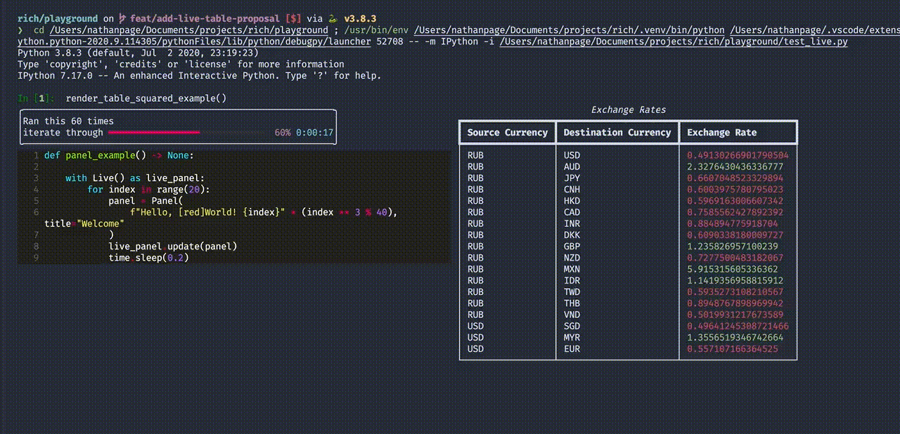
2. 安装说明
使用 pip 或其他 PyPi 软件包管理器进行安装。
pip install rich
3. 打印功能
想毫不费力地将 Rich 的输出功能添加到您的应用程序中，您只需导入rich 打印方法，该方法和其他 Python 的自带功能的参数类似。
from rich import print
print("Hello, [bold magenta]World[/bold magenta]!", ":vampire:", locals())
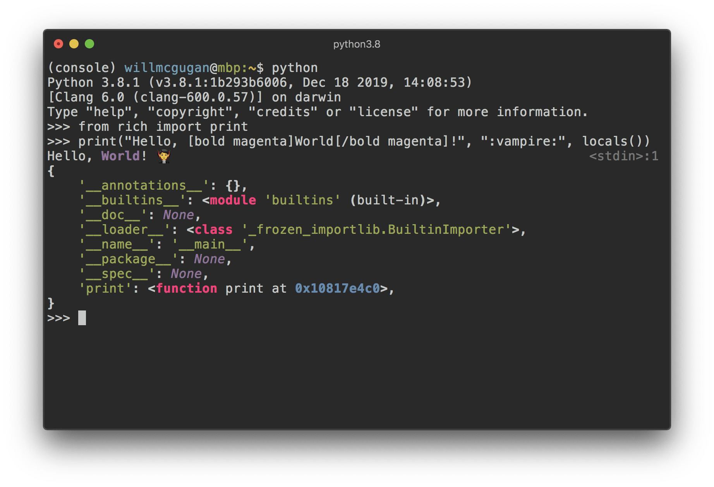
4. 使用控制台
想要对 Rich 终端内容进行更多控制，请您导入并构造一个控制台对象。
from rich.console import Console
console = Console()
Console 对象含有一个 print 方法，它的界面与 python 内置的 print 功能界面相似。
console.print("Hello", "World!")
您可能已经料到，这时终端上会显示 “Hello World”。请注意，与内置的 “打印” 功能不同，Rich 会将文字自动换行以适合终端宽度。
有几种方法可以为输出添加颜色和样式。您可以通过添加 style 关键字参数来为整个输出设置样式。
console.print("Hello", "World!", style="bold red")
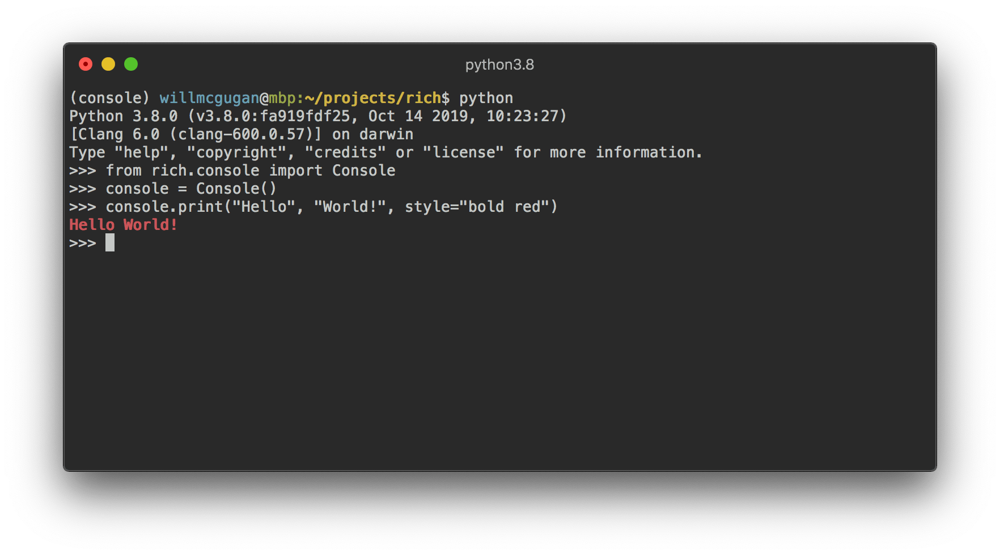
这个范例一次只设置了一行文字的样式。如果想获得更细腻更复杂的样式，Rich 可以渲染一个特殊的标记，其语法类似于 bbcode。
console.print("Where there is a [bold cyan]Will[/bold cyan] there [u]is[/u] a [i]way[/i].")
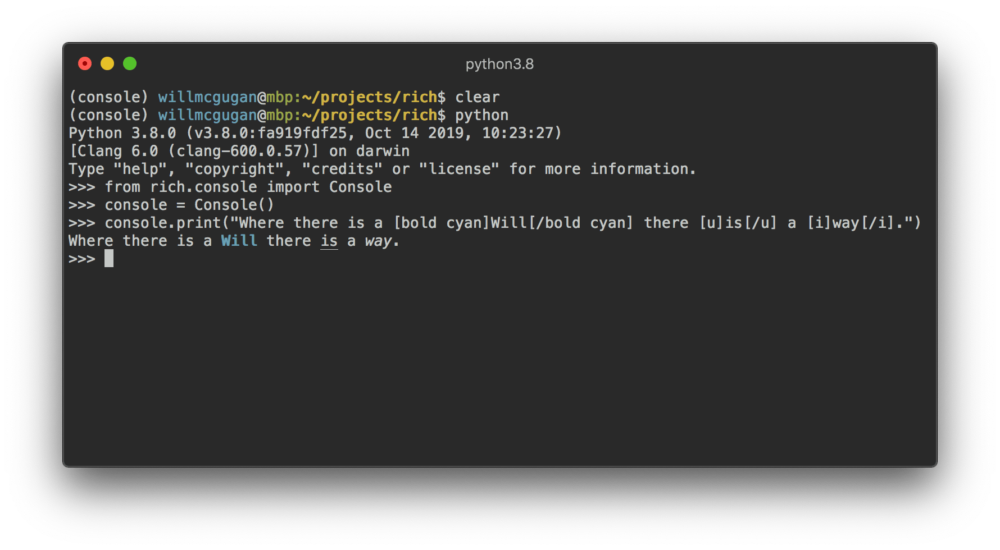
4.1 控制台记录
Console 对象具有一个 log() 方法，该方法具有与 print() 类似的界面，除此之外，还能成列显示当前时间以及被调用的文件和行。默认情况下，Rich 将针对 Python 结构和 repr 字符串进行语法突出显示。如果您记录一个集合（如字典或列表），Rich 会把它漂亮地打印出来，使其切合可用空间。
from rich.console import Console
console = Console()
test_data = [
{"jsonrpc": "2.0", "method": "sum", "params": [None, 1, 2, 4, False, True], "id": "1",},
{"jsonrpc": "2.0", "method": "notify_hello", "params": [7]},
{"jsonrpc": "2.0", "method": "subtract", "params": [42, 23], "id": "2"},
]
def test_log():
enabled = False
context = {
"foo": "bar",
}
movies = ["Deadpool", "Rise of the Skywalker"]
console.log("Hello from", console, "!")
console.log(test_data, log_locals=True)
test_log()
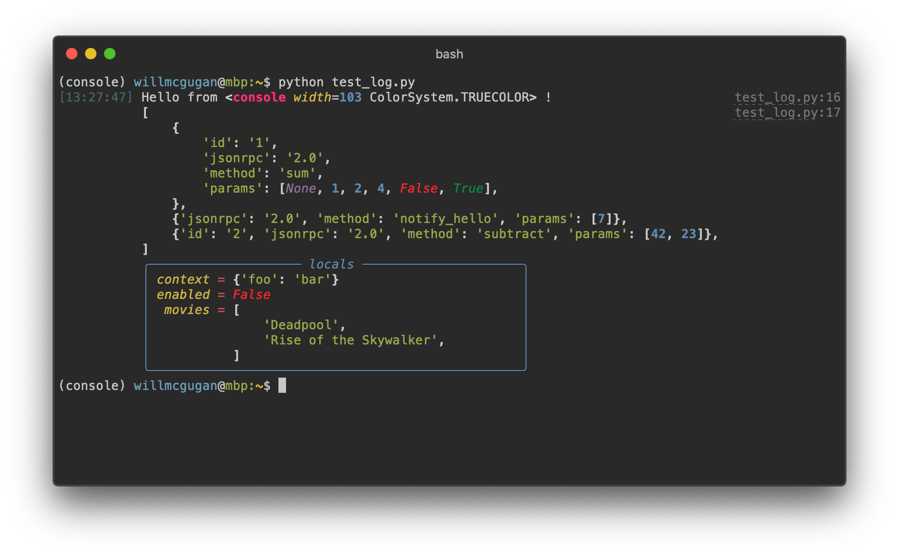
注意其中的 log_locals 参数会输出一个表格，该表格包含调用 log 方法的局部变量。log 方法既可用于将长时间运行应用程序（例如服务器）的日志记录到终端，也可用于辅助调试。
4.2 记录处理程序
您还可以使用内置的 处理类 来对 Python 日志记录模块的输出进行格式化和着色。
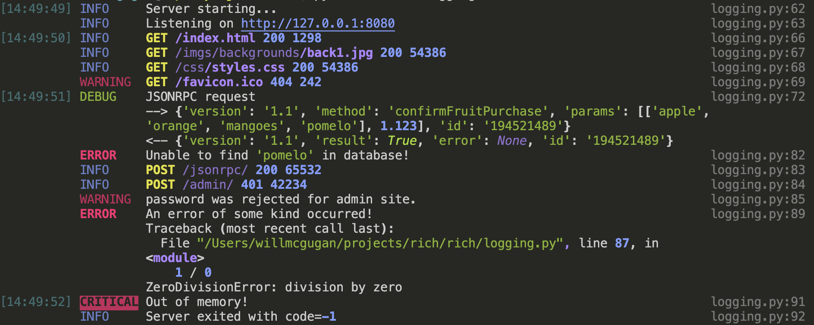
5. 表情符号
将名称放在两个冒号之间即可在控制台输出中插入表情符号。
>>> console.print(":smiley: :vampire: :pile_of_poo: :thumbs_up: :raccoon:")
😃 🧛 💩 👍 🦝
6. 表格
Rich 可以使用 Unicode 框字符来呈现多变的 表格。Rich 包含多种边框，样式，单元格对齐等格式设置的选项。
from rich.console import Console
from rich.table import Column, Table
console = Console()
table = Table(show_header=True, header_style="bold magenta")
table.add_column("Date", style="dim", width=12)
table.add_column("Title")
table.add_column("Production Budget", justify="right")
table.add_column("Box Office", justify="right")
table.add_row(
"Dev 20, 2019", "Star Wars: The Rise of Skywalker", "$275,000,000", "$375,126,118"
)
table.add_row(
"May 25, 2018",
"[red]Solo[/red]: A Star Wars Story",
"$275,000,000",
"$393,151,347",
)
table.add_row(
"Dec 15, 2017",
"Star Wars Ep. VIII: The Last Jedi",
"$262,000,000",
"[bold]$1,332,539,889[/bold]",
)
console.print(table)
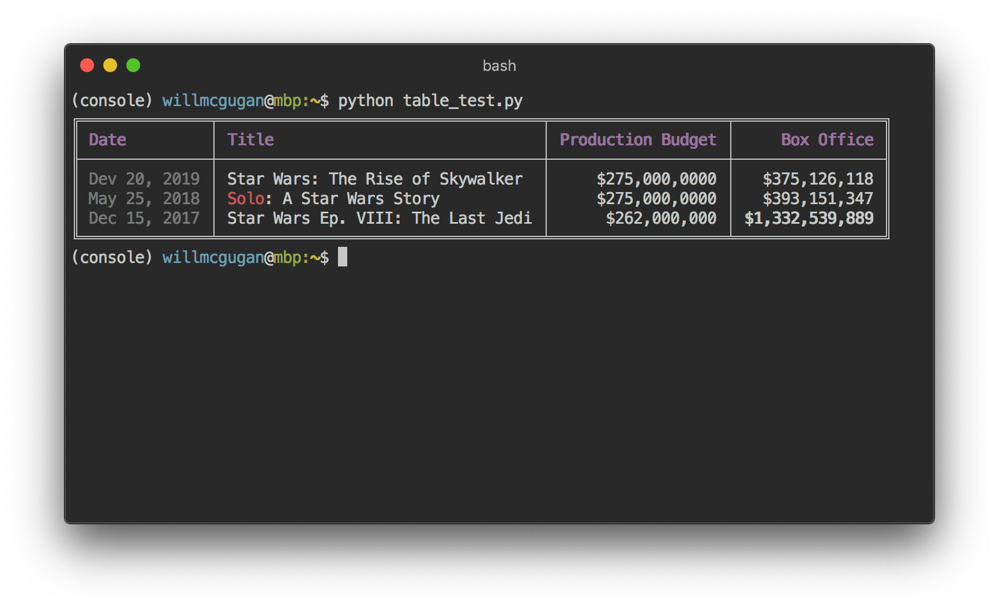
请注意，控制台标记的呈现方式与 print() 和 log() 相同。实际上，由 Rich 渲染的任何内容都可以添加到标题/行（甚至其他表格）中。Table 类很聪明，可以调整列的大小以适合终端的可用宽度，并能根据需要环绕文本。
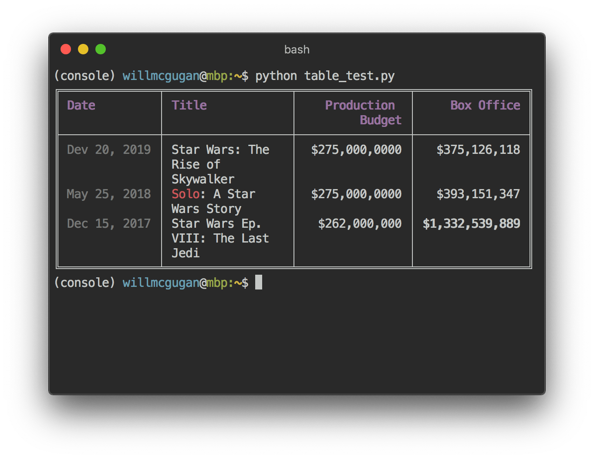
7. 进度条
Rich 可以渲染多个不闪烁的进度条形图，以跟踪长时间运行的任务。基本用法：用 track 函数调用任何程序并迭代结果。
from rich.progress import track
for step in track(range(100)):
do_step(step)
添加多个进度条并不难。
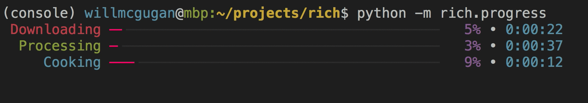
这些列可以配置为显示您所需的任何详细信息。内置列包括完成百分比，文件大小，文件速度和剩余时间。
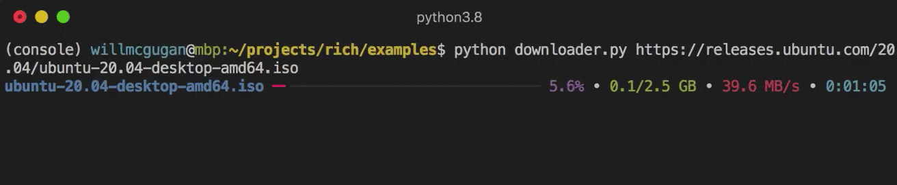
要自己尝试一下，请参阅examples/downloader.py，它可以在显示进度的同时下载多个 URL。
8. 列
Rich 可以将内容通过排列整齐的，具有相等或最佳的宽度的列来呈现。下面是（macOS / Linux）ls命令的一个非常基本的克隆，用于用列来显示目录列表：
import os
import sys
from rich import print
from rich.columns import Columns
directory = os.listdir(sys.argv[1])
print(Columns(directory))
以下屏幕截图是 列示例 的输出，该列显示了从 API 提取的数据：
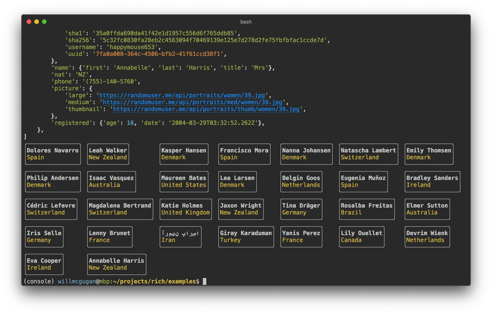
9. Markdown
Rich 可以呈现 markdown，并可相当不错的将其格式转移到终端。为了渲染 markdown，请导入 Markdown 类，并使用包含 markdown 代码的字符串来构造它，然后将其打印到控制台。
from rich.console import Console
from rich.markdown import Markdown
console = Console()
with open("README.md") as readme:
markdown = Markdown(readme.read())
console.print(markdown)
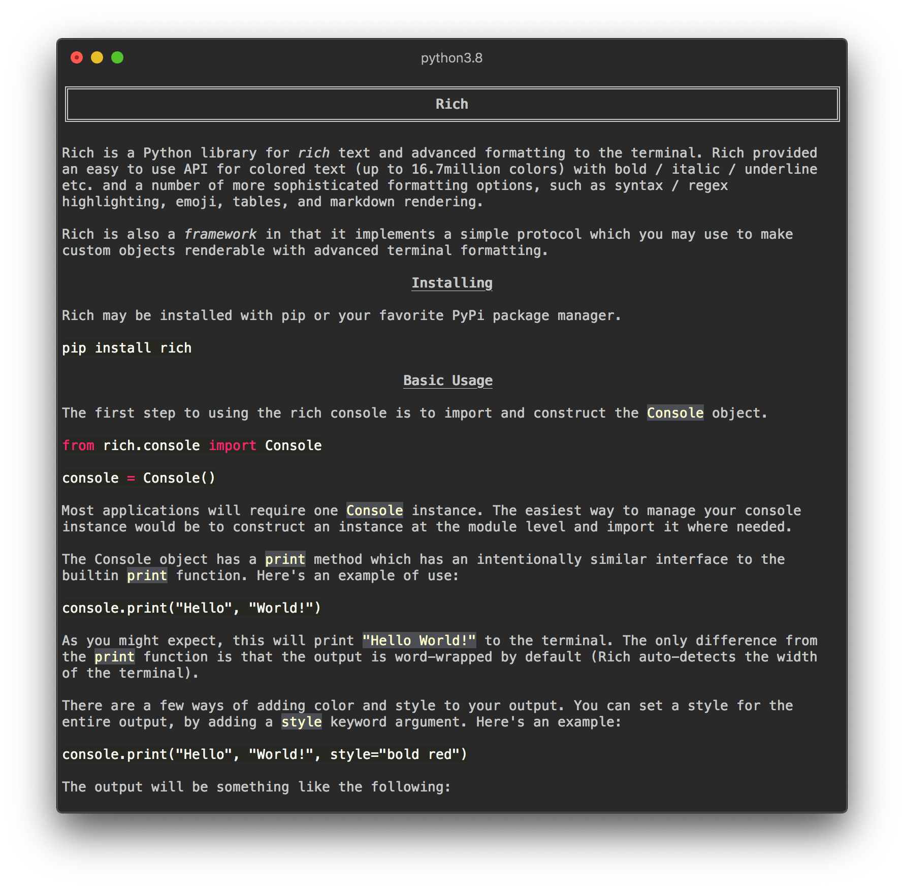
10. 语法突出显示
Rich 使用pygments库来实现语法高亮显示。用法类似于渲染 markdown。构造一个 Syntax 对象并将其打印到控制台。
from rich.console import Console
from rich.syntax import Syntax
my_code = '''
def iter_first_last(values: Iterable[T]) -> Iterable[Tuple[bool, bool, T]]:
"""Iterate and generate a tuple with a flag for first and last value."""
iter_values = iter(values)
try:
previous_value = next(iter_values)
except StopIteration:
return
first = True
for value in iter_values:
yield first, False, previous_value
first = False
previous_value = value
yield first, True, previous_value
'''
syntax = Syntax(my_code, "python", theme="monokai", line_numbers=True)
console = Console()
console.print(syntax)
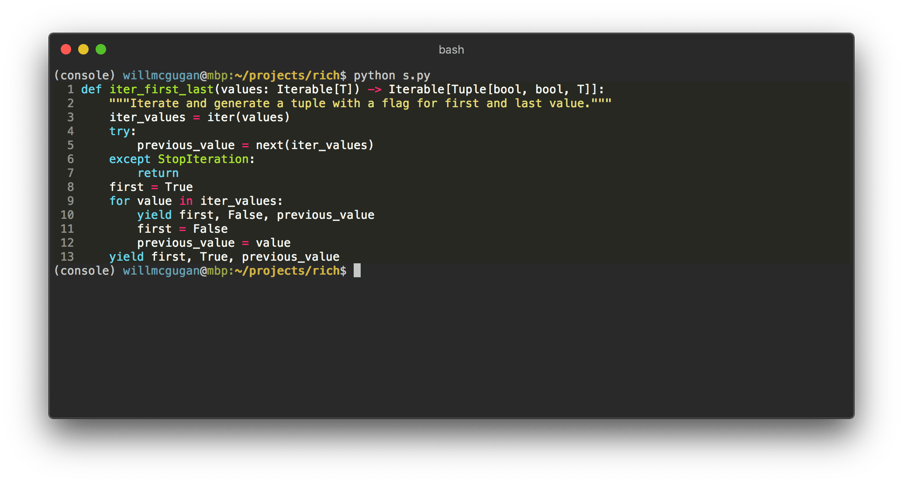
11. 回溯
Rich 可以渲染漂亮的回溯，比标准 Python 回溯更容易阅读，并能显示更多代码。您可以将 Rich 设置为默认的回溯处理程序，这样所有难以捕获的异常都将由 Rich 为您呈现。
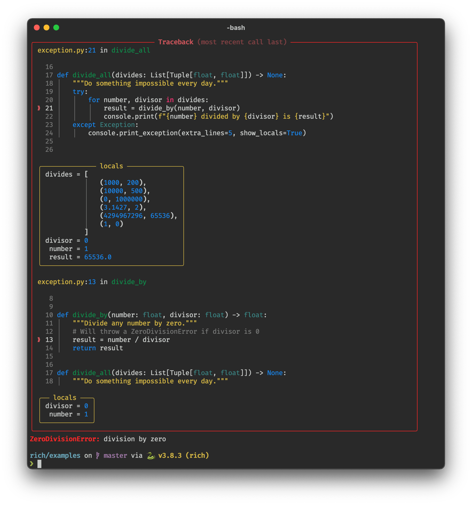
12. 使用的项目
这里是一些使用 Rich 的项目:
- BrancoLab/BrainRender
- 一个用于三维神经解剖数据可视化的 python 包
- Ciphey/Ciphey
- 自动解密工具
- emeryberger/scalene
- 一个高性能、高精度的 Python CPU 和内存剖析器
- hedythedev/StarCli
- 通过命令行浏览 GitHub 热门项目
- intel/cve-bin-tool
- 这个工具可以扫描一些常见的、有漏洞的组件（openssl、libpng、libxml2、expat 和其他一些组件），让你知道你的系统是否包含有已知漏洞的常用库。
- nf-core/tools
- 包含 nf-core 社区帮助工具的 Python 包
- cansarigol/pdbr
- pdb + rich 的库，增强调试功能
- plant99/felicette
- 傻瓜式卫星图像
- seleniumbase/SeleniumBase
- 使用 Selenium 和 pytest 使自动化和测试速度提高 10 倍，包括电池
- smacke/ffsubsync
- 自动将字幕与视频同步
- tryolabs/norfair
- 轻量级 Python 库，用于向任何检测器添加实时 2D 对象跟踪